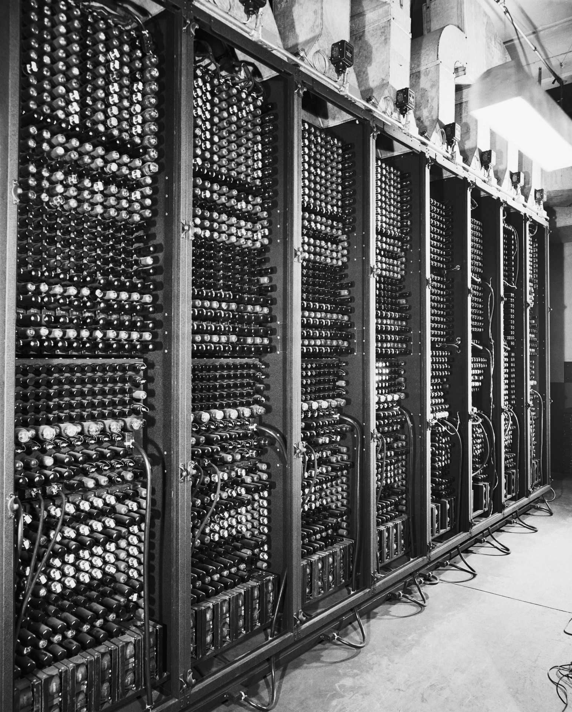
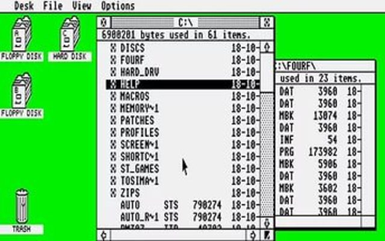
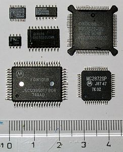
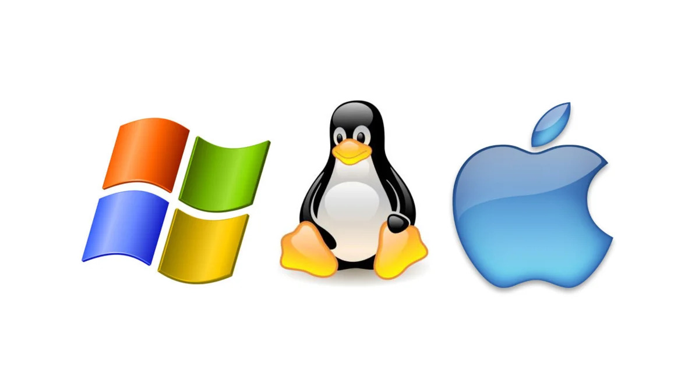

Первое поколение(1945–1955): Электронные лампы.
В основе базовой системы элементов этого поколения компьютеров лежали электронные лампы. Электронные лампы обеспечивали высокую скорость переключения логических элементов, что увеличивало скорость вычисления по срав нению с попытками создать вычислительную машину, базовый элемент которой был построен на основе электромеханического реле.
Вычислительные машины получались громоздкими, заполняющими целые комнаты, с десятками тысяч электронных ламп, но все равно они были в миллионы раз медленнее, чем даже самый дешевый современный персональный компьютер. В те времена каждую машину и разрабатывала, и строила, и программировала, и эксплуатировала, и поддерживала в рабочем состоянии одна команда. Все программирование выполнялось на машинном языке, управление основными функциями машины осуществлялось просто при помощи соединения коммутационных панелей проводами.
Второе поколение (1955-1965): Транзисторы и системы пакетной обработки.
В 1948 г. изобретены полупроводниковые приборы — транзисторы. Новая элементная база на основе транзисторов произвела революцию не только в производстве компьютеров, но и в радиоэлектронной промышленности в целом. В отличие от электронных ламп транзисторы характеризовались малыми размерами, низким напряжением питания и малой потребляемой мощностью. Площадь, требуемая для размещения компьютера, снизилась до нескольких квадратных метров. Снижение стоимости компьютера увеличило число потенциальных пользователей компьютеров.
Появились крупные фирмы по производству компьютеров широкого назначения: International Business Machines (IBM), Control Data Corporation (CDC), Digital Equipment Corporation (DEC) и др. Вскоре в 1955 г. Робертом Патриком была разработана первая ОС под названием GM-HAA. Она работала на архитектуре IBM 701 для IBM 704. Основной функцией GM-НАА — являлось автоматическое выполнение новой программы, когда старая программа завершилась. Далее технологии постоянно улучшались, однако чего-то примечательного не изобреталось. Типичными были FMS, IBSYS (она была создана компанией IBM для 7090 и 7094) и др.
Третье поколение (1965-1980): Интегральные схемы и многозадачность.
В 1959 г. Роберт Нойс (будущий основатель фирмы Intel) изобрел метод, позволивший создать на одной пластинке и транзисторы, и все необходимые соединения между ними. Полученные электронные схемы стали называться интегральными схемами, или чипами. В 1970 г. фирма Intel начала продавать интегральные схемы памяти. Использование интегральных микросхем привело не только к резкому увеличению надежности ЭВМ, но и к снижению размеров, энергопотребления и стоимости (до 50 тыс. долларов).
Уменьшение стоимости привело к разработке и практической реализации мощных вычислительных систем, использующих параллельную обработку: многопроцессорные и конвейерные вычислители. Появилась OS/360, превышающая по объему такую ОС как FMS. Появление ОС MULTICS которая не стала популярной, но повлияла на будущее ОС. Был разработан стандарт системы UNIX. В 1987 году Таненбаум выпустил в образовательных целях небольшой клон системы UNIX — MINIX. Создание самого популярного в то время семейства операционных систем – DOS. Также создание таких операционных систем как TSS / 360, TSS/8. Начиная с 1971-1979 были созданы такие ос как: DOS-11, OS/8 1BSD, 2BSD, 3BSD, apple DOS и т.д.

Четвертое поколение (1980 - Наше время): Персональные компьютеры.
Теперь полупроводниковая схема содержала уже не набор нескольких логических элементов, из которых строились затем функциональные узлы компьютера, а целиком функциональные узлы. Это в первую очередь процессор, который, учитывая его размеры, получил название микропроцессор, а также устройства управления внешними устройствами — контроллеры внешних устройств. Такие интегральные схемы получили название сначала больших интегральных схем (БИС), а затем и сверхбольших интегральных схем (СБИС). Итогом такого развития микроэлектроники стало появление одноплатных ЭВМ, где на одной плате размещались несколько СБИС, содержащих все функциональные блоки компьютера.
Ввиду того, что стоимость одноплатных ЭВМ стала еще более доступной, английские инженеры С. Джобс и С. Возняк собрали настольную вычислительную машину—микрокомпьютер (Apple) (рисунок 2.4). Следующий период эволюции операционных систем связан с появлением БИС — больших интегральных схем. Появилась видоизмененная DOS, она была переименована в MS-DOS (MicroSoft Disk Operating System). CP/M, MS-DOS и другие операционные системы для первых микрокомпьютеров. С 1985 по 1995 год Windows была просто графической оболочкой, работавшей поверх MS-DOS. Однако в 1995 году была выпущена самостоятельная версия Windows — Windows 95. В 1998 году была выпущена слегка модифицированная версия этой системы, получившая название Windows 98. Также были разработаны такие ОС как: Mac OS, Solaris 2.0, FreeBSD, линейка ОС Windows (NT), ОС на Linux.
Пятое поколение (1990 - Наше время): Мобильные компьютеры.
Конечно же с развитием компьютерных технологий начали появляться и ОС для телефонов. Первой ОС для телефонов стала EPOC16. Из ОС на телефон самые популярные ANDROID, IOS и т.д.